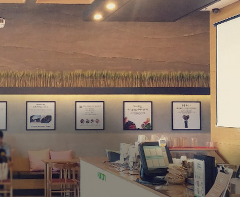
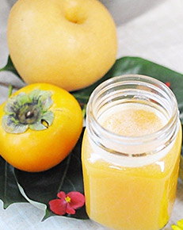
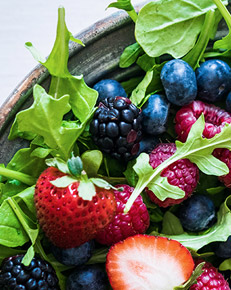
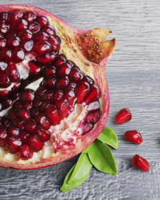
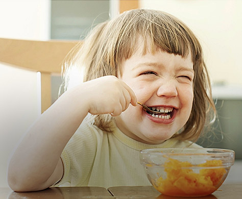

채소 과일의 힘
자연 그대로인 채소와 과일에서 건강의 해답을 찾을 수 있습니다.
휴롬주스
휴롬 주스는 자연 그대로의 맛과 영양이 생생하게 살아있는 건강하고 신선한 프리미엄 주스입니다.
-
- 비트사과
- 변비예방과 독소배출, 빈혈예방에 효과적입니다.
-
- 당근오렌지
- 면역력을 향상시키고 항암효과가 있습니다.
-
- 케일시금치
- 면역력을 향상시키고 혈당조절, 당뇨예방, 골다공증 예방에 효과적입니다.
-
- 비트자몽
- 해독작용이 있으며 눈 건강, 피로회복, 면역력 증진, 빈혈 예방에 효과적입니다.
-
- 양배추배
- 호흡기 질환을 예방하며 위점막 보호, 피로회복, 소화작용에 효과적입니다.
-
- 방울토마토사과
- 변비 예방, 독소 배출, 비만 예방에 효과적입니다.
-
- 당근파인애플
- 신진대사를 촉진 시키며 눈을 건강하게 해줍니다.
-
- 양배추망고
- 위장을 보호해주며 소화작용을 촉진시켜줍니다.
-
- 신선초사과
- 면역력을 향상시키고 변비예방, 당뇨예방, 골다공증 예방에 효과적입니다.
-
- 방울토마토당근
- 부종을 완화해주며 항암 효과가 있습니다.
휴롬주스카페
휴롬주스카페에서 전문가가 전하는 건강한 자연을 체험하세요.
휴롬주스 아티클
휴롬주스카페는 건강한 삶을 위한 휴롬 라이프를 사람들에게 전합니다.
-

- 새롭게 단장한 휴롬주스카페 도산대로점을 만나보세요
- 가장 신선한 채소 과일로 만드는 건강한 휴롬주스가 있는 곳.
휴롬주스카페가 이번에 어떻게 바뀌었을까요?
-

- 가을철 달콤한 건강주스 감&배 주스
- 단감의 달콤함과 배의 시원함이 잘
어우러진 감&배 주스를 만나보세요.
-

- 건강하게 살빼는 법, 효소 다이어트!
- 건강한 효소 다이어트법, 채소 과일에서
찾아라!
-
- 불면증의 원인과 예방법
- 숙면에 도움이 되는 채소 과일을 충분히
섭취하고 규칙적인 생활패턴을 지키세요.
-

- 가을이 제철인 석류의 효능과 섭취법
- 여성과는 뗄레야 뗄 수 없는 과일 석류!
가을 석류로 건강을 챙기세요!
-

- 연령별 알맞은 재료로 식습관 기르기
- 연령별 안심 재료에 맞춘 식단으로 골고루 섭취하고, 건강한 아이로
자랄 수 있도록 성장기 자녀의 건강을 책임져 주세요!